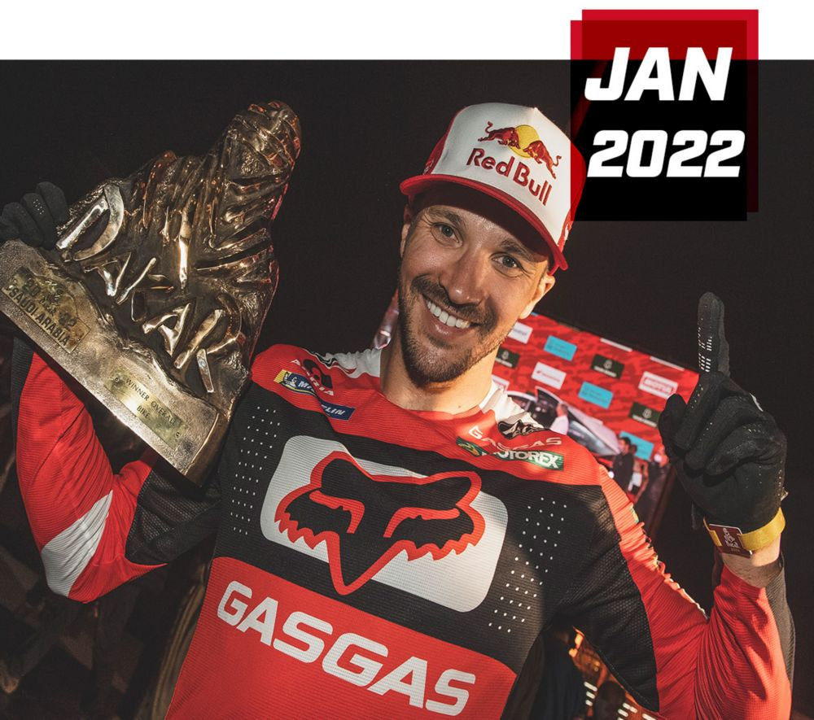

Rallye-Dakar winner
1.Trial
V trialu GasGas historicky dominoval a právě zde si vybudoval své obrovské jméno.
Éra Jordiho Tarrése (90. dominance): Legendární španělský jezdec Jordi Tarrés vybojoval pro
GasGas první tituly mistra světa v outdoorovém trialu v letech 1993, 1994 a 1995.
Adam Raga: Další ikona trialu, která na GasGasu získala tituly mistra světa v outdooru (2005,
2006) a čtyřikrát v halovém (indoor) trialu (2003–2006).
Laia Sanz: Neuvěřitelná závodnice, která na strojích GasGas naprosto opanovala ženský trial –
získala pro značku více než 10 titulů mistryně světa (TrialGP Women).
2. Enduro a Hard Enduro
Jakmile GasGas ovládl trial, přesunul svou sílu i do klasického endura (WEC /
EnduroGP).
Tituly mistrů světa: Značka slavila světové tituly díky jezdcům jako Paul Edmondson (1994, 125cc),
Petteri Silván (1999, 250cc a absolutní titul) nebo Samuli Aro (2004).
Novodobá éra (Hard Enduro): Po převzetí skupinou Pierer Mobility (KTM) v roce 2019 se červené
motorky vrátily na vrchol. Manuel Lettenbichler v roce 2024 a v posledních letech na stroji GasGas
dominoval světovému šampionátu v Hard Enduru (včetně vítězství na brutálním Red Bull Erzbergrodeo).
3.Rallye Dakar
V dálkových rallye se GasGas zapsal do historie zlatým písmem teprve nedávno, ale o to
výrazněji.
Vítězství na Rallye Dakar (2022): Britský jezdec Sam Sunderland dojel na motocyklu GasGas RC 450F
Rally pro celkové vítězství. Bylo to vůbec poprvé, co značka GasGas vyhrála slavný Dakar, a porazila
tak sesterskou KTM i konkurenční Hondu.
Mistr světa ve World Rally-Raid (2022): Sam Sunderland v témže roce přidal i celkový titul mistra
světa v dálkových rallye.
4. Motokros (MXGP a AMA)
Vstup do nejvyšších pater motokrosu přišel až s novou érou pod vedením KTM, ale
výsledky se dostavily okamžitě.
Jorge Prado (Mistr světa MXGP 2023, 2024): Španělský fenomén Jorge Prado vybojoval pro GasGas
historicky první tituly mistra světa v královské třídě MXGP. Dokázal to ve dvou sezónách po sobě,
což značku definitivně etablovalo mezi motokrosovou elitu.
Úspěchy v USA (AMA Supercross/Motocross): Justin Barcia (přezdívaný „Bam Bam“) dokázal na GasGasu
vyhrát hned svůj první závod v prestižním AMA Supercrossu (Houston 2021) a pravidelně sbíral pódiová
umístění.
5. Silniční motocykly (Moto3 a Moto2)
Ačkoliv je GasGas primárně off-roadová značka, v rámci marketingu vstoupila i do
silničního šampionátu MotoGP (ve třídách Moto3 a Moto2 s týmem Aspar).
Titul v Moto3 (2022): Španělský mladík Izán Guevara se na motocyklu s logem GasGas stal mistrem
světa ve třídě Moto3. V téže sezóně získal tým GasGas Aspar i týmový titul.